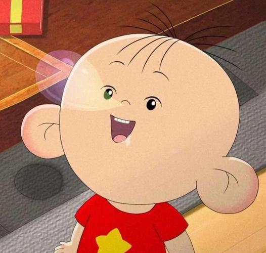
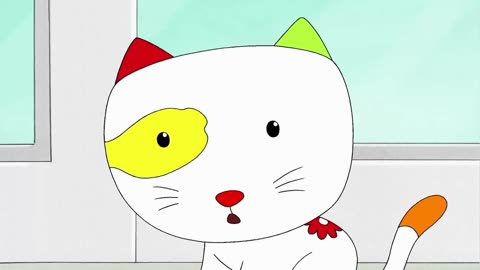
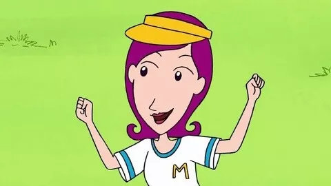
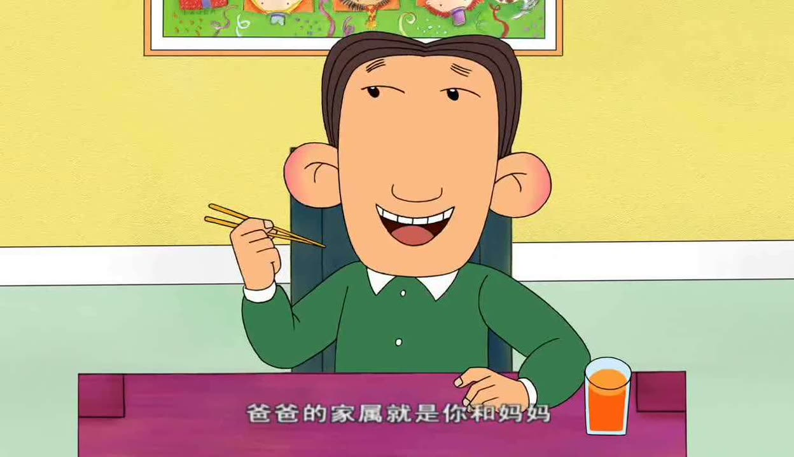

-

胡图图
胡图图是《大耳朵图图》系列动画的主角，是一个三岁的小男孩，性格机灵、淘气且聪明。 他天生快乐，心地善良，喜欢多管闲事，对周围的事物充满好奇，尤其喜欢吃
-

小怪
图图的生日礼物，一只白底彩色斑纹的小猫。 它和图图一样平凡、淘气，后来成为图图的好朋友。小怪只吃蔬菜，这让它显得很特别
-

张小丽
图图的妈妈，保险公司推销员，性格急躁，尤其在对付捣蛋的图图时常常按捺不住性子。 她爱家，喜欢做家务，但在丈夫和孩子面前也会撒娇
-

胡英俊
图图的爸爸，性格开朗，热爱唱歌和体育运动，对图图的教育方式开明。 他有一对和图图一样的招风耳，常常因为自己的肚腩而感到忧虑